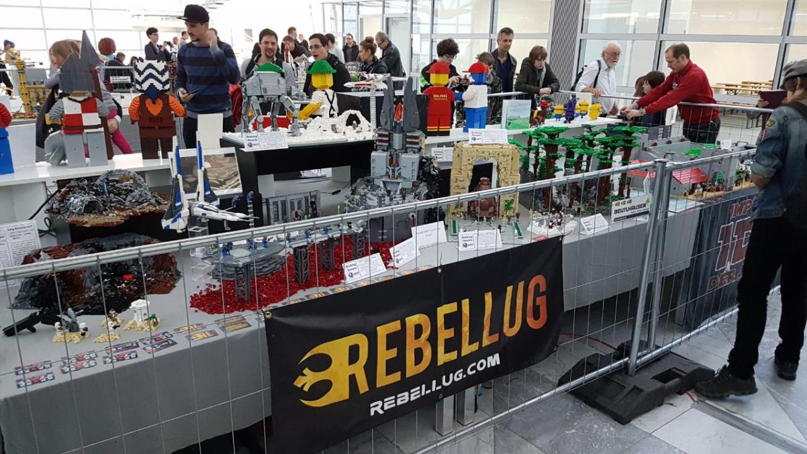

Bricking Bavaria 2017 Recap
Bricking Bavaria 2017, the first European RebelLUG meetup
11/27/17
With a suitcase full of MOC’s and clothes I boarded the train that would take me to Hannover, and from there to Munich. It was Thursday the 16th of November, 7 AM. The destination: Bricking Bavaria 2017, the first European RebelLUG meetup. A few months earlier I was contacted by Noah, (H2Brick), asking if I was willing to come down to Munich for the event. I and two other members, Victor (98CSI) and Luke (FirstOrderLego) agreed to come. Additionally, Tristan (LonelyCloneProductions) would also display with us.
I was picked up from Munich Central Station by Noah at around 4 PM, from where we went straight to the MOC (yes that is actually what it is called) convention center. On Thursday the center was closed to the public to allow us to set up our creations. Luke had arrived earlier that day and was already setting up, along with LCP, when we got there. I set up my MOC’s and walked around a bit, after which we went back to the station to pick up Victor. By the time we got back to the center we had to rush to get his part of the Maul Collab, which had not exactly survived the journey from Paris intact, out of his huge travel case and on the table. We then left for Tristan’s house, where we arrived at around 00:15. Despite the hour of our arrival, we were picked up from the station by car and greeted with bread and bagels, as we hadn’t found the time to eat in between setting up and sitting in trains.
 The next day we left early to set up the last parts of Victor’s MOC before the center opened to the public at 10. We barely got it done in time. Our table space was about 1 meter by 3-4 meters, a space in which we crammed as many builds as possible, including three Maul Collab sections, three large battlefront builds by Tristan, Noah’s circular Theed diorama and my military vehicles, along with a 40x40 vignette to display one of the tanks on. On the other side of the table were MOC’s created by members of Imperium Der Steine, which contained a lot of very well executed Star Wars builds. Across the aisle from us was the Rogue Bricks table, on which a plethora of small and large spaceships were displayed, along with some great Assassin’s Creed and Apoc builds. The crown piece on this table however was a huge Scariff tower, standing at about 1.8 meters tall and very detailed for its size. Another notable display was The Brick Time’s Dunholm display, which was displayed for the last time before being taken apart. Another personal favourite of mine was the simple but surprisingly addictive build your own moonbase, which allows you to build and rebuild a modular microscale moonbase in pretty much every artstyle in the retro space theme, and making use of lots of unconventional and ‘worthless’ pieces. Yet another great display was the huge battle of Dathomir, featuring the Night Sister’s fortress and a brickbuilt Rancor.
The next day we left early to set up the last parts of Victor’s MOC before the center opened to the public at 10. We barely got it done in time. Our table space was about 1 meter by 3-4 meters, a space in which we crammed as many builds as possible, including three Maul Collab sections, three large battlefront builds by Tristan, Noah’s circular Theed diorama and my military vehicles, along with a 40x40 vignette to display one of the tanks on. On the other side of the table were MOC’s created by members of Imperium Der Steine, which contained a lot of very well executed Star Wars builds. Across the aisle from us was the Rogue Bricks table, on which a plethora of small and large spaceships were displayed, along with some great Assassin’s Creed and Apoc builds. The crown piece on this table however was a huge Scariff tower, standing at about 1.8 meters tall and very detailed for its size. Another notable display was The Brick Time’s Dunholm display, which was displayed for the last time before being taken apart. Another personal favourite of mine was the simple but surprisingly addictive build your own moonbase, which allows you to build and rebuild a modular microscale moonbase in pretty much every artstyle in the retro space theme, and making use of lots of unconventional and ‘worthless’ pieces. Yet another great display was the huge battle of Dathomir, featuring the Night Sister’s fortress and a brickbuilt Rancor.
While walking around the floor and sitting in the designated displayers area I had the privilege to talk to many of the other displayers. With a combination of English and broken German I chatted with members from Rogue Bricks, in particular Jonas Kramm, as well as Asoka from Imperium Der Steine. The event itself was organized very well, with both the public and the displayers in mind. For the displayers there were four different build challenges spread across the three days the event was open to the public, to keep us from getting bored just standing next to our table. The organisers provided us with sets to use in these challenges and we were allowed to keep the bricks afterwards. There was also free food and drinks for displayers, along with beer for 1 euro per bottle. An AFOL night was also organized at a local restaurant, featuring tables full of free lego to keep us busy while waiting on our food and drinks. 6 awards were given out that night to the best builds in the show. Once again, the organization was fantastic, and trusted the displayers to pitch in to break even for the event with a set auction and donation box instead of charging us for attendance or food. And the attendance was enormous, with thousands of people every day. Almost every table was surrounded by people all day on Saturday and Sunday. It was really exciting to see my work studied and admired by that many people.
It was great to finally meet some of my fellow RebelLUG members and chat face to face. We took a few trips to the Lego store, traded some stuff and drank a few beers together. Tristan’s parents were wonderful hosts, and the same is true for Noah’s parents, who hosted Victor and me on Sunday night. I had a great time and am definitely looking forward to the event next year, as Bricking Bavaria is switching from once every two years to taking place yearly. This was thanks to all the builders who pitched in during the event. This was my first event, and a great experience. Until next year!